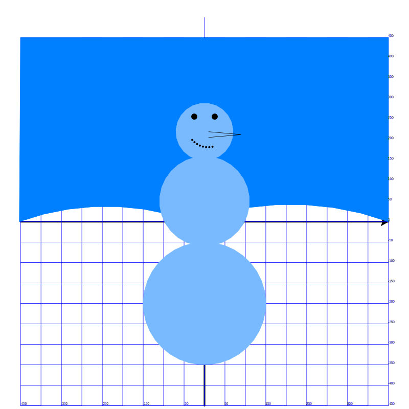

Продолжаем рисовать снеговика.
Сегодня добавили новые элменты. Вот результат:

Вот таблица команд Turtle, которые мы использовали:
| Команда | Что она делает | Перевод команды на русский |
|---|---|---|
from turtle import * |
Использовать все инструменты черепашки для рисования из модуля turtle. |
"из модуля черепашка импортировать всё" |
speed(0) |
Делает черепашку очень быстрой, как гоночную машину! | "скорость" |
shapesize(2, 2, 1) |
Делает черепашку больше и толще. | "размер формы" |
goto(x, y) |
Телепортирует черепашку в определённое место на экране (как волшебный портал!). | "перейти к" |
width(4) |
Устанавливает толщину линии, которую рисует черепашка. | "ширина" |
forward(450) |
Перемещает черепашку вперёд на определённое расстояние. | "вперёд" |
stamp() |
Оставляет постоянный отпечаток черепашки на экране (как её подпись). | "печать" |
backward(900) |
Перемещает черепашку назад на определённое расстояние. | "назад" |
left(90) |
Поворачивает черепашку налево на определённый угол (как вращающийся волчок!). | "влево" |
right(90) |
Поворачивает черепашку направо на определённый угол. | "вправо" |
color("blue") |
Меняет цвет линии черепашки (например, синий, красный или даже радужный!). | "цвет" |
setheading(0) |
Направляет черепашку в определённую сторону (0 = вправо, 90 = вверх, 180 = влево). | "установить направление" |
begin_fill() |
Начинает закрашивать фигуру, которую черепашка нарисует дальше (как раскрашивание внутри линий!). | "начать заливку" |
end_fill() |
Заканчивает закрашивание фигуры. | "закончить заливку" |
circle(700, 40) |
Рисует часть круга (как кусочек пиццы!). | "круг" |
write("text") |
Пишет слова или числа на экране там, где находится черепашка. | "написать" |
penup() |
Поднимает карандаш, чтобы черепашка перестала рисовать, двигаясь. | "поднять перо" |
pendown() |
Опускает карандаш, чтобы черепашка снова начала рисовать. | "опустить перо" |
dot() |
Рисует маленькую точку (как посыпка!). | "точка" |
colormode(255) |
Позволяет использовать специальные радужные цветовые коды (как смешивание красок!). | "режим цвета" |
done() |
Оставляет окно с рисунком открытым, пока вы его не закроете. | "готово" |
Вот наш исходный код:
from turtle import *
# shape("turtle")
speed(0)
shapesize(2, 2, 1)
# goto(-400, 0)
# goto(400, 0)
# goto(0, 0)
def draw_coordinates():
# рисуем горизонтальную шкалу
width(4)
forward(450)
stamp()
backward(900)
# рисуем вертикальную шкалу
forward(450)
left(90)
forward(450)
stamp()
backward(900)
# горизонатальные линии
color("blue")
width(1)
for i in range(19):
setheading(0)
forward(450)
write(i * 50 - 450)
backward(900)
forward(450)
left(90)
forward(50)
right(90)
# вертикальные линии
right(90)
forward(50)
right(90)
forward(450)
left(90)
for i in range(9):
forward(900)
write(i * 50 * 2 - 450)
left(90)
forward(50)
left(90)
forward(900)
right(90)
forward(50)
right(90)
forward(900)
def draw_sky():
# небо - 1я половина
colormode(255)
color(0, 128, 255)
penup()
goto(450, 0)
pendown()
setheading(160)
begin_fill()
circle(700, 40)
# небо - 2я половина
setheading(160)
circle(620, 40)
goto(-450, 450)
goto(450, 450)
goto(450, 0)
end_fill()
def draw_snowman():
colormode(255)
# нарисовать круг
setheading(180)
color(121, 186, 254)
penup()
goto(0, -50)
pendown()
begin_fill()
circle(150)
end_fill()
# нарисовать второй круг
goto(0, -60)
setheading(0)
begin_fill()
circle(110)
end_fill()
# третий круг
goto(0, 150)
begin_fill()
circle(70)
end_fill()
# левый глаз
goto(-25, 250)
color("black")
begin_fill()
circle(7)
end_fill()
# правый глаз
penup()
goto(25, 250)
pendown()
begin_fill()
circle(7)
end_fill()
# рот
speed(1)
penup()
goto(-30, 200)
right(50)
for i in range(8):
dot()
circle(50, 9)
# нос
goto(10, 220)
pendown()
setheading(-5)
forward(80)
setheading(-175)
forward(80)
draw_coordinates()
draw_sky()
draw_snowman()
hideturtle()
getcanvas().postscript(file="snowman.eps", x=-500, width=1000, height=1000)
done()
У тебя хорошо получается!